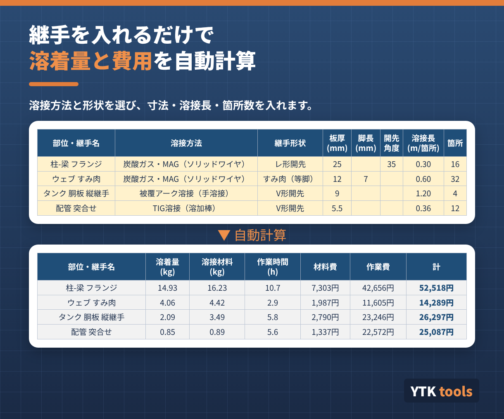
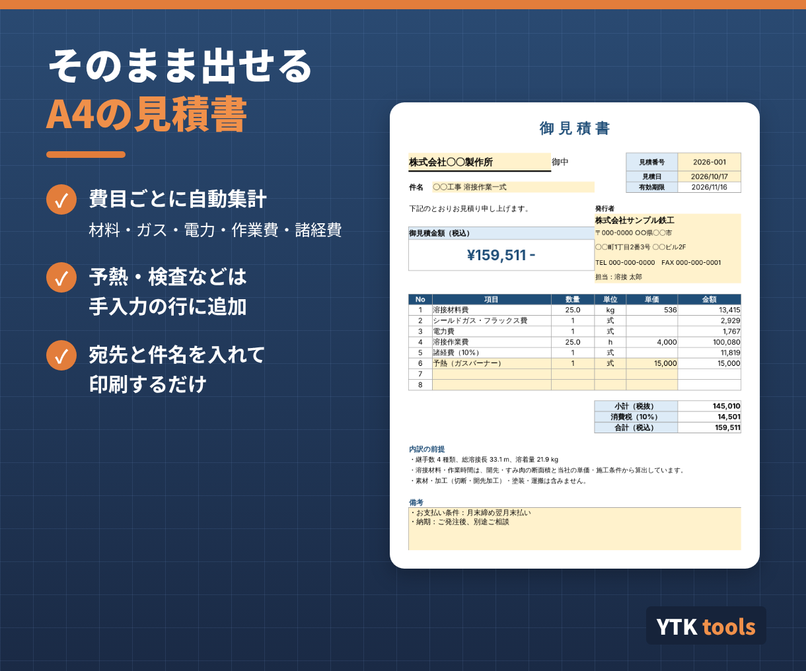
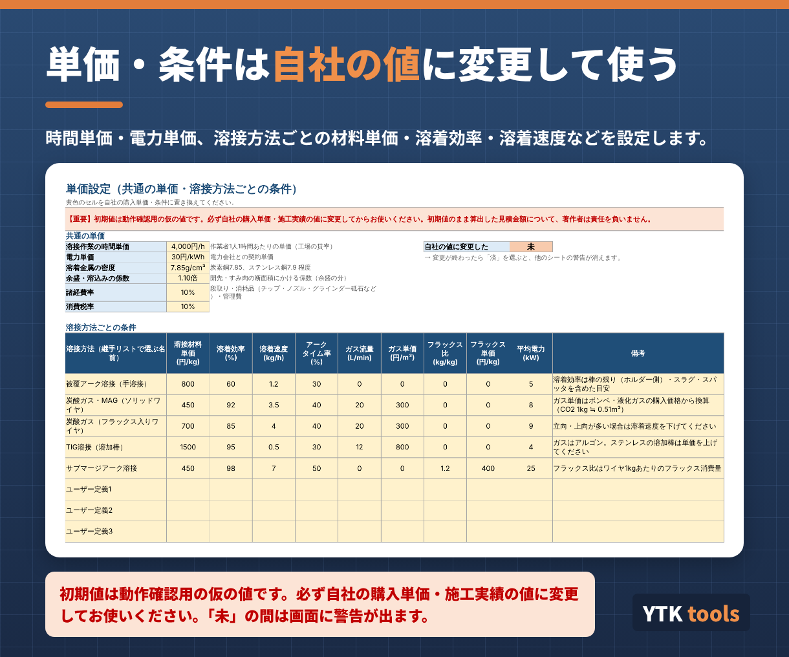

こんな場面で使えます
- 溶接の見積もりを、経験と勘で出している
- 継手が多い案件で、溶接材料やワイヤの量をまとめて出したい
- 見積の根拠（溶着量・作業時間）をお客様や社内に説明したい
- 1継手ずつの計算サイトでは、案件全体の金額が出せない
主な機能
- 継手リスト（最大60行）：溶接方法と形状をリストから選び、寸法・溶接長・箇所数を入力
- すみ肉（等脚）、V形・レ形・X形開先、I形（突合せ）の断面積を自動計算（余盛の係数つき）
- 溶着量・溶接材料・フラックス・アーク時間・作業時間・ガス量と、材料費・ガス費・電力費・作業費を自動計算
- 見積書：費目ごとの金額・諸経費・消費税を自動で集計。予熱・検査などは手入力の行に追加でき、A4縦1枚で印刷
- 単価設定：時間単価・電力単価、溶接方法ごとの材料単価・溶着効率・溶着速度・アークタイム率・ガス流量を変更可能


初期値について（必ずお読みください）
単価設定の初期値は、動作確認用の仮の値です。必ず自社の購入単価・施工実績の値に変更してからお使いください。初期値のまま算出した見積金額について、作成者は責任を負いません。変更が終わるまで、画面に警告が表示されます（見積書の印刷には出ません）。

仕様・動作環境
| 溶接方法 | 被覆アーク溶接、炭酸ガス・MAG（ソリッドワイヤ／フラックス入りワイヤ）、TIG溶接、サブマージアーク溶接。自由に追加できる枠が3つあります |
|---|---|
| 継手形状 | すみ肉（等脚）、V形開先、レ形開先、X形開先、I形（突合せ） |
| 形式 | Excelファイル（.xlsx）。マクロ不使用で、数式だけで動きます |
| 動作環境 | Windows版 Microsoft Excel（2016以降／Microsoft 365） |
| お届け | ご購入後すぐにExcelファイルをダウンロードできます |
| 価格 | 1,000円（税込）・買い切り |
| 作成者 | YTK tools（溶接管理技術者 WES 特別級が作成） |
計算結果は概算です。姿勢（立向・上向）、多層盛りの清掃、裏はつり、予熱などで作業時間は大きく変わります。見積金額の最終判断はご自身で行ってください。
考え方や計算式をまとめた記事：溶接コスト見積シートの解説記事（note）